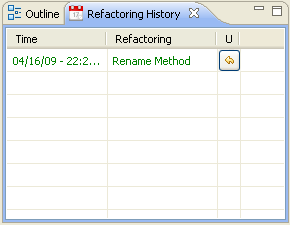

Running Dynamic RefactoringsRunning Dynamic Refactorings
Running Dynamic RefactoringsRunning Dynamic RefactoringsOnce the desired dynamic refactoring has been selected, a new dialog will open. You will have to configure the refactoring within this dialog.
This is a dynamically generated dialog, which means it will contain a different set of configurable parameters depending on the selected refactoring.
You will see two or three tabs on the top: one containing the parameters that must be configured before the refactoring can be run, the second one that shows a brief summary of the refactoring that's being configured and its structure and the third one which contains the examples of the refactoring, this one only appears if the refactoring selected has any example associated.
The dialog should be similar to the following one, which belongs to the "Rename Method" refactoring:
All the empty fields must be given a value before the Run button is pushed in order for the
refactoring to start. Otherwise, you will get a warning message.
When running the refactoring, the selected values for the given configuration might lead to a precondition failing, which means the refactoring cannot be safely run. In such cases, you will get an error message and the refactoring process will be cancelled.
The message will give you some information about the precondition that could not be fulfilled and why it might have been.
If you try to rename a constructor method in a Java class, for instance, you would get a message like the following:

If it is a postcondition that fails after the refactoring has been completed, a similar error message will show up containing some details on why the postcondition failed. In that case, the refactoring will be automatically undone to preserve correctness. Note that this may not be an accurate process on some complex refactorings.
If the error occurs during the refactoring process itself, it would result in an error message and the undoing of the already executed actions as well.
When the seleted refactoring finishes, the Refactoring Progress view is updated with
the refactoring progress and the low-level actions the refactoring performed.
The Refactoring History view is also updated. This view will show the time and date
when every refactoring completed, as well the name its refacoring. You may also use this view to
undo any of the run refactorings.
